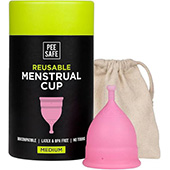
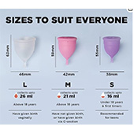
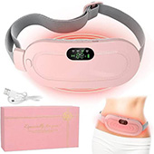

1) Pee safe’s Menstrual cup for women
 Experience comfort and convenience with Pee Safe's reusable menstrual cup! Available in three sizes to fit your unique flow, it's eco-friendly, leak-proof, and designed for all-day protection. Say goodbye to disposable products and embrace a sustainable period solution with Pee Safe!
PEE SAFE's Menstrual Cup is the perfect, eco-friendly alternative to traditional period products, offering comfort, reliability, and sustainability. Available in three sizes—Small, Medium, and Large—this cup caters to all women’s unique needs.

- Size S: Collects up to 16 ml of menstrual flow and is ideal for teens and first-time users, ensuring a comfortable fit and peace of mind.
- Size M: Collects up to 21ml and is recommended for women who have not given birth or those who have had a C-section, offering great leak protection and a secure fit.
- Size L: Collects up to 26 ml and is suitable for women who have given birth vaginally, providing optimal protection for heavier flow days.
Made from medical-grade silicone, the PEE SAFE Menstrual Cup is reusable, reducing waste and providing up to 12 hours of leak-free protection. Girls over the age of 18 are eligible to use the menstrual cup, making it a versatile and hygienic option for all stages of menstruation. Choose the size that fits your body best, and enjoy a worry-free period!

2) aGIOGIO’s Menstrual heating pad
Find relief from menstrual cramps with aGIOGIO's Portable Cordless Heating Pad! Designed for comfort, it offers 3-speed temperature adjustment and 4-speed massage modes to target your stomach and back. Stay cozy and pain-free, anytime, anywhere. The ultimate solution for on-the-go comfort
3) Whisper Period Panty
Stay confident and comfortable all day with Whisper Super Absorbent Period Panties! Designed with 360° leakage protection and a panty-like fit, they offer full back coverage and absorb heavy gushes. Silky soft and perfect for heavy flow days—feel the comfort, embrace the freedom!
4) Heat Patches for Period Pain and Cramps
NUA Cramp Comfort Heat Patches are your go-to solution for quick, effective relief from period pain and cramps. Designed with 100% natural ingredients, these heat patches provide soothing warmth to help relax muscles and ease discomfort during your menstrual cycle.
- 3 Patches per Pack: Conveniently designed for multiple uses, each patch provides up to 8 hours of pain relief, allowing you to stay comfortable throughout the day.
- 100% Natural Ingredients: Crafted with natural materials, these heat patches are safe, non-toxic, and gentle on the skin.
- Quick & Long-Lasting Relief: Target your cramps and pain directly with fast-acting, lasting warmth that helps reduce discomfort in no time.